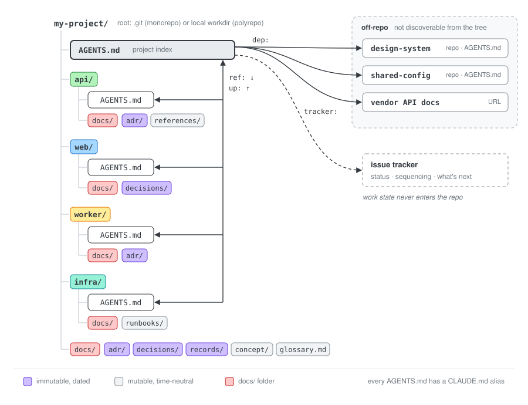

Startone
AGENTS.md at the root↓
In flightstatus lives in the tracker, never in the repo
↓
Landeddecision →
event →
rule →
adr/event →
records/rule →
AGENTS.mdHow you get from one to the next is your call.